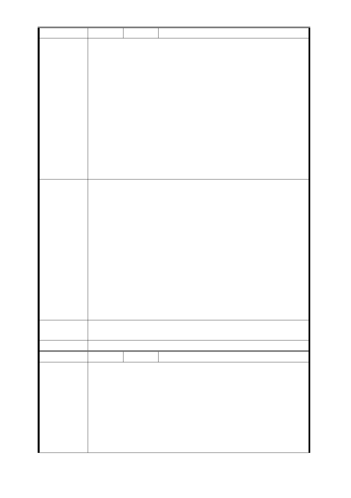

編 號 捷五-40 陳情人 趙王○金等 2 人
一、本基地為五樓之老舊公寓，郝市長承諾市民室內一坪換
一坪，並多一個車位之方式獎勵辦理都市更新。而本基地為
配合政府公共政策開闢捷運出口，但捷運聯合開發地主提供
土地配合市府政策，卻反而造成地主分到面積比單純都市更
新更少，且捷運出口及捷運設施勢必犧牲部分都更可取得之
獎勵容積項目，因此應給予更高容積獎勵。
陳情理由
二、本基地為私有地且地面上有建物，市政府未貢獻土地卻
又要再與私地主共享獎勵面積，實在沒道理，何況地主分得
部分還需再分給投資者。因此市政府不應分配獎勵面積，才
能彌補解決地主分坪不足之損害，地主強烈要求分回原居住
之室內面積，以實踐市長一坪換一坪並加一停車位之政見承
諾，以鼓勵本捷運聯合開發內各地主參與聯開及都市更新創
造市容再生、環境永續與市民生計三贏！建請捷運局及都發
局將心比心替居民著想。
一、比照商業區，提高法定容積率。
二、捷運獎勵、都市計劃獎勵應提高法定容積。
三、基地總開發容積包含捷運獎勵容積，都市計劃獎勵容積
，都市更新獎勵容積及都市計劃容積移轉等。
四、捷運獎勵及都市計劃獎勵面積應全部歸地主，市政府不
應與地主共享。
建議辦法
五、爾後聯合開發建坪數，聯合開發商如有較大坪數之選擇
，應供原住戶以建造價格承購。
六、市府為一體，施政應完整評估對市民最有利之方案提出
，現有地上建物請都發局、都市更新處依更新權利價值估算
，納入後續辦理都更地主應分回之權利值，不應任由捷運局
以現行公共建設拆遷補償費用方式草草辦理，損害地主權益
，應依中央法規標準法之精神採有利於民眾之計算方式辦理
。
市府回應
意見
同編號捷五－1 回應意見。
委員會決議 同編號交一－1 委員會決議。
編 號 捷五-41 陳情人 黃○菊等 2 人
國家有需要我們願盡全力支持配合，也謝謝你們辛苦了！但
也希望政府能給予我們合理健全的補償。
1. 室內坪數：假如有 30 坪
a. 至少給 30 坪，只能多，不能少（你們至少蓋十一、二
陳情理由
層）
b. 如蓋二十層以上，那我們至少有 60 坪以上，以此類推
。最少比例是 5：5 分帳，最多的比例是 6：4，6.2：3.8
分帳。
2. 建材：室內隔間最近報紙、電視報導，隔壁上廁所的聲音
- 79 -